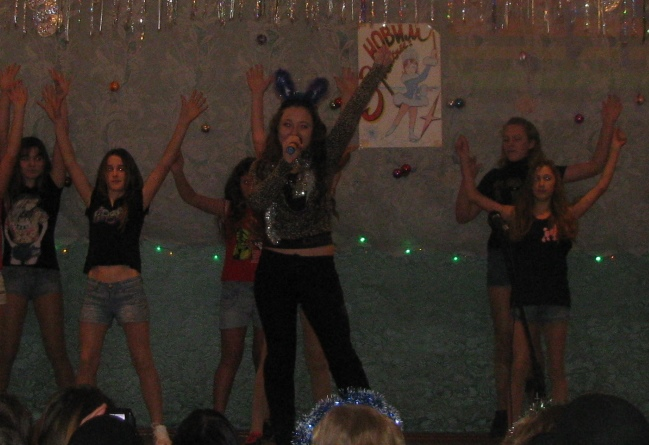

І все ж я віддаю перевагу пісні.
Цьому найдавнішому, найпопулярнішому музичному жанрові, Мама...Подаруй майбуття...в якому поєднуються музика і поезія. Тій шовковій ниточці, що із серця, як із клубка, снується крізь ціле життя.Нехай збереже вона тепло людських сердець,
нехай робить їх душевнішими, красивішими у своїх почуттях.